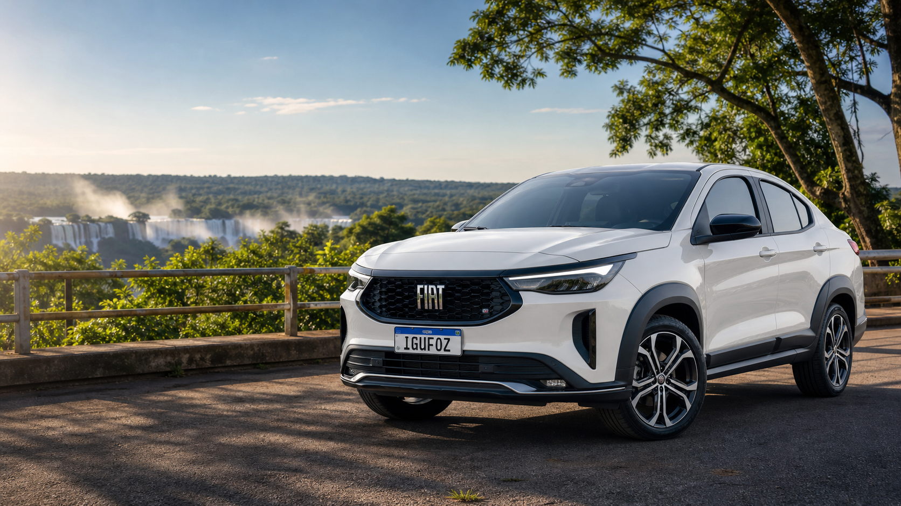

A MELHOR LOCADORA DA TRIPLICE FRONTEIRA
Alugue seu carro em Foz do Iguaçu sem complicação
Conheça três destinos em uma única viagem. Retire seu veículo em Foz do Iguaçu e explore Ciudad del Este e Puerto Iguazú com a liberdade de veículos com Carta Verde e o suporte de quem conhece a Tríplice Fronteira.

Reserva rápida
Solicite sua reserva em menos de 1 minuto.
Frota
Uma frota moderna para uma experiência melhor
Veículos novos, revisados e equipados com tecnologia, conforto e segurança para que você aproveite sua viagem pela Tríplice Fronteira com total tranquilidade.
Carregando frota…
Valores de referência. Podem variar conforme período, disponibilidade, proteções e adicionais selecionados.
Diferencial IguFoz
Carta Verde para quem quer cruzar a fronteira com tranquilidade
A IguFoz emite a autorização de travessia junto com o veículo para circular em Puerto Iguazú, Ciudad del Este e Presidente Franco. Esse diferencial reduz uma das maiores dúvidas de quem visita Foz.
Perguntas frequentes
Respostas diretas para reduzir insegurança antes da reserva
Como funciona a reserva e o pagamento?
Você reserva agora sem pagar nada. O pagamento só acontece na retirada do veículo, e não há taxa de cancelamento se precisar desistir.
Qual a idade mínima e os requisitos para alugar?
É necessário ter no mínimo 21 anos e CNH definitiva com pelo menos 2 anos de emissão. Na retirada também é obrigatório apresentar cartão de crédito físico, nominal ao titular do contrato.
Quais documentos preciso enviar para o cadastro?
Foto da CNH (ou CNH digital exportada do app — prints não são aceitos), comprovante de residência no nome do titular e um e-mail válido. Estrangeiros precisam enviar também foto do passaporte e da licença de conduzir, frente e verso.
Onde ficam as unidades da Igufoz?
Temos duas unidades:
📍 IGU Oklahoma — Av. das Cataratas, 1419. Todos os dias, das 08h às 18h.
📍 IGU Centro — Av. Brasil, 90. Seg a sáb, das 08h às 20h.
Retirada após as 18h é exclusiva para clientes que chegam pelo aeroporto e que tenham feito a reserva com pelo menos 24 horas de antecedência.
Vocês oferecem translado do aeroporto?
✈️ Transfer Gratuito do Aeroporto até a Loja
Buscamos você no aeroporto sem custo! Para garantir o transfer é necessário:
✅ Reserva realizada com 48 horas de antecedência
✅ Voo com chegada dentro dos horários abaixo:
🕐 Segunda a Sábado: 07h30 às 19h20
🕐 Domingo: 07h30 às 16h00
⚠️ Voos fora desses horários não estão cobertos pelo transfer gratuito.
⚠️ O transfer é somente do aeroporto até a loja. Não realizamos o retorno loja/aeroporto.
Como funciona a devolução no aeroporto?
A devolução pode ser feita a qualquer hora em um dos estacionamentos parceiros. Nenhum funcionário da Igufoz estará presente, mas as vagas são monitoradas por câmeras 24 horas e os veículos não são manobrados por ninguém do estacionamento.
💡 Recomendamos registrar fotos ou vídeos no momento da devolução.
Quais são as opções de proteção do veículo?
Oferecemos três níveis de proteção: Terceiros, Parcial e Plus. A diferença principal está na coparticipação em caso de sinistro:
🔹 Terceiros — R$ 1.200,00
🔹 Parcial — até 20% da tabela FIPE
🔹 Plus — até 10% da tabela FIPE
⚠️ A Proteção a Terceiros cobre apenas danos causados a terceiros — não cobre o veículo locado.
Posso usar a proteção do meu cartão de crédito?
Sim, mas a maioria dos cartões não cobre danos a terceiros, então recomendamos ao menos a Proteção a Terceiros da Igufoz. Optando só pela proteção do cartão, a caução sobe para R$ 25.000,00 e você assume responsabilidade integral pelo veículo e por danos a terceiros.
O que é a caução e quanto fica bloqueado no meu cartão?
A caução é um bloqueio temporário no limite do seu cartão de crédito — não é uma cobrança. O valor varia de acordo com a proteção escolhida:
🔒 Parcial ou Plus + Terceiros: R$ 1.200,00 a R$ 2.000,00
🔒 Somente Terceiros: R$ 20.000,00
🔒 Sem nenhuma proteção: R$ 25.000,00
O desbloqueio ocorre após a devolução do veículo, no prazo definido pelo seu banco emissor.
É possível cruzar a fronteira para Argentina e Paraguai?
Sim. Nossos veículos são autorizados a circular em Foz do Iguaçu, Puerto Iguazú (Argentina) e Ciudad del Este e Presidente Franco (Paraguai). Para isso é necessário contratar a autorização de travessia com Carta Verde, emitida junto com o veículo na retirada.
Posso usar minha própria Carta Verde?
Não. A Carta Verde é um seguro vinculado à placa do veículo, então só é possível utilizar a que emitimos junto com o carro que você vai retirar.
Quais documentos preciso para passar pela fronteira?
É obrigatória a apresentação da CNH física original — documentos digitais não são aceitos na aduana. Também é necessário RG ou passaporte para todos os passageiros.
Como funciona a política de combustível?
Trabalhamos com nível variado: você devolve o veículo com o mesmo nível de combustível recebido na retirada. Devoluções com nível abaixo do combinado têm cobrança de R$ 9,00 por litro de diferença.
Qual a franquia de quilometragem da diária?
A franquia é de 200 km por dia rodado. Quilometragem excedente tem cobrança adicional.
O que acontece se eu atrasar a devolução do veículo?
Há 1 hora de cortesia após o horário combinado. Depois disso, são cobradas horas adicionais equivalentes a 1/3 da diária. Após 4 horas de atraso, é cobrada uma diária inteira adicional.
Posso fumar dentro do veículo?
Não. É proibido fumar dentro do carro. A devolução com odor de fumaça ou presença de cinzas gera cobrança de taxa de higienização.